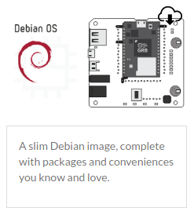
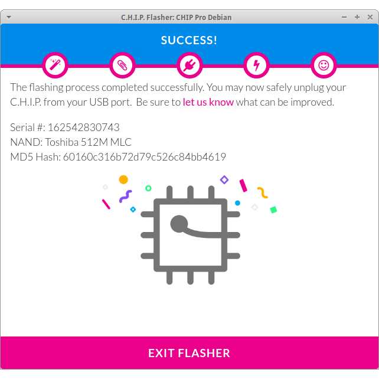

Make a CHIP Pro hub
The CHIP Pro is an inexpensive Linux computer with native Bluetooth support. Since at reelyActive we're passionate about the endless possibilities of detecting "advertising" Bluetooth Low Energy (BLE) devices, we were excited to make the CHIP Pro into a sniffer using our open source code (like we did with the Raspberry Pi 3). In this tutorial we'll take you step-by-step through building a reliable, standalone BLE sniffer from a CHIP Pro running Debian.
NOTICE: As of the time of writing the CHIP Pro Bluetooth Driver is not available. With any luck, when the driver becomes available, the following will work out-of-the-box like it does on the Raspberry Pi 3.
Hardware Prerequisites
You'll need a CHIP Pro (or equivalent) Dev Kit.
Preparing the CHIP Pro
Flash your CHIP Pro by opening their FLASHER webpage with the Chrome (or Chromium) browser and following the on-screen instructions. When prompted select the Debian OS option.
You should see the following screen once flashing is complete.
 Unplug the CHIP Pro from your PC's USB port and then plug it back in again. The CHIP Pro should boot up and accept a connection from your PC over USB. See Connect and Control for details on how to connect. On Linux the command is likely screen /dev/ttyUSB0 115200 with default username and password both chip.
Connect to WiFi
Connected to the CHIP Pro, run the following from the command line, substituting your WiFi SSID and password:
sudo nmcli d wifi connect "Your SSID" password "Your Password" ifname wlan0
Update packages
It is good practice to ensure that the software on the CHIP Pro is up to date before proceeding with any software installation. From the command line on the CHIP Pro, execute the following in order:
sudo apt-get update
sudo apt-get upgrade
Install required packages
The Debian OS on the CHIP Pro is necessarily lite given the limited flash memory size. Here we'll install the packages we need to run the sniffer code (xz-utils to unzip the Node.js tarball, build-essential and python to compile npm packages, and libudev-dev for BLE sniffing). From the command line on the CHIP Pro, execute the following in order:
sudo apt-get install xz-utils
sudo apt-get install build-essential
sudo apt-get install python
sudo apt-get install libudev-dev
Note that build-essential and python eat up a lot of disk space. There won't be much free space left on the CHIP Pro once we complete the full installation
Install Node.js and forever
Node.js is a JavaScript runtime which runs libraries (such as our own) from the largest ecosystem of open source libraries in the world. The forever package is one of these libraries, and it will keep our programs running forever, even if they crash.
Install Node.js
From the command line on the CHIP Pro, execute the following in order (optionally change 6.9.2 below throughout to the latest LTS version as indicated here):
mkdir ~/Downloads
cd ~/Downloads
wget https://nodejs.org/dist/v6.9.2/node-v6.9.2-linux-armv7l.tar.xz
tar -xf node-v6.9.2-linux-armv7l.tar.xz
sudo mv node-v6.9.2-linux-armv7l /usr/local/node
rm node-v6.9.2-linux-armv7l.tar.xz
cd /usr/local/bin
sudo ln -s /usr/local/node/bin/node node
sudo ln -s /usr/local/node/bin/npm npm
Confirm that v6.9.2 appears when you run node -v. Node.js is now installed.
Install forever
cd /usr/local/bin
sudo npm install forever -g
sudo ln -s /usr/local/node/bin/forever forever
Install chip-suite
The chip-suite is a collection of reelyActive open source software which allows your CHIP Pro to:
- listen for BLE devices on its integrated radio
- listen for BLE devices via a reelyActive starter kit
- interpret the packets of these BLE devices
- host webpages displaying the interpreted data
- forward the live data stream to a remote server
From the command line on the CHIP Pro, execute the following in order:
mkdir ~/reelyActive
mkdir ~/reelyActive/chip-suite
cd ~/reelyActive/chip-suite
wget reelyactive.github.io/resources/chip-suite.tar.xz
tar -xf chip-suite.tar.xz
rm chip-suite.tar.xz
npm install
Start Sniffing!
From the command line on the CHIP Pro, where you should still be in the ~/reelyActive/chip-suite folder, execute the following:
sudo node chip-suite
NOTICE: You're likely to see an error message at this point given that at the time of writing the CHIP Pro Bluetooth Driver is not available. With any luck, when the driver becomes available, the following will work out-of-the-box like it does on the Raspberry Pi 3.
The console output should include a line that says Browse to your CHIP Pro at http://xxx.xxx.xxx.xxx with the IP address of your CHIP Pro in place of the x values. Copy the link and open it in your browser.

Become a bubble!
The bubblescape is a visualisation of all the BLE devices sniffed by your CHIP Pro. Fancy yourself as a bubble? Install reelyApp on your Android or iOS device to experience the following:
Once you've finished your initial exploration of the various webpages displaying the live data, press Ctrl-C to terminate the execution of chip-suite before proceeding with the next steps (still to come...)
What's next?
Create a beautiful dashboard to display what the CHIP Pro sniffs! Base your web application on our dashboard-template-angular or beaver.js which tap into the live socket.io data feed from our open source software running on the CHIP Pro.
If you build your own unique hub and would like to share your project, please get in touch!